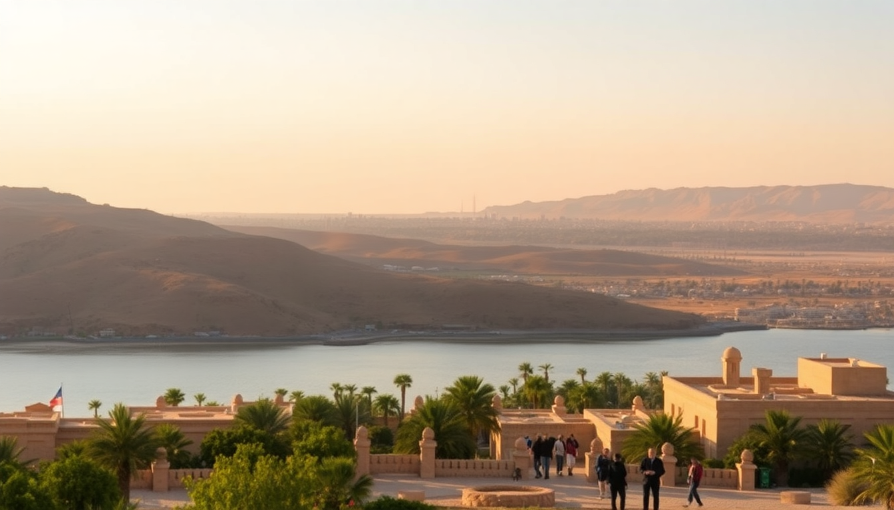

10-Day Egypt Itinerary: Cairo, Luxor & Aswan Nile Cruise

We spent ten days in Egypt and came back with sunburns, a love for koshari, and a very clear sense of what works and what doesn’t on a tight itinerary. This route—Cairo, then a sleeper train to Luxor, a Nile cruise to Aswan, and a flight back—is the classic loop for a reason. It hits the big monuments without making you feel like you’re on a death march. Here’s exactly how we did it, including the hotels we’d book again and the tourist traps we’d dodge.
Is 10 days enough for Cairo, Luxor, and Aswan?
Yes, but only if you move deliberately. Ten days forces you to choose between depth and breadth, and we leaned toward breadth. You’ll see the Pyramids, the Valley of the Kings, and Abu Simbel, but you won’t have time to linger in a Cairo café all afternoon. We landed in Cairo, spent three nights there, took the overnight sleeper train to Luxor, spent three nights on a cruise boat sailing to Aswan, and flew out of Aswan. That schedule gave us full days at each site without feeling like we were sprinting.
The sleeper train from Cairo to Luxor is a rite of passage. It’s not luxurious—think 1970s rail car with a fold-down bed and a meal tray—but it saves a night of hotel cost and gets you to Luxor by breakfast. Book the Wagon Lit service at least a month ahead; it sells out.
What’s the best way to see the Pyramids of Giza without the hassle?
Go early. We’re talking 7:00 AM early. We hired a private driver through our hotel in Zamalek—The St. Regis Cairo—and were at the Giza Plateau gate before the tour buses arrived. The first hour was almost peaceful. By 9:00 AM, the heat and the crowds turn the place into a circus.
- Skip the camel ride at the main viewing platform. It’s overpriced, the animals are worked hard, and you’ll get a better photo from the sand dunes behind the Great Pyramid.
- Go inside the Great Pyramid only if you’re claustrophobic-curious. The tunnel is steep, narrow, and hot. We did it once and wouldn’t repeat it.
- The Solar Boat Museum is worth the extra ticket. The reconstructed cedar boat is genuinely impressive, and the museum is air-conditioned.
- Lunch tip: avoid the tourist restaurants on Pyramids Road. Instead, head to Felfela in downtown Cairo for proper falafel and ful medames.
After the pyramids, we drove 20 minutes to the Grand Egyptian Museum (GEM). It’s partially open as of our visit, and the Tutankhamun collection alone is worth the trip. The main hall is massive, and the lighting is far better than the old Egyptian Museum in Tahrir Square, which we found dusty and poorly labeled.
How do you handle the Luxor temples and the Valley of the Kings in one day?
We stayed at Hilton Luxor Resort & Spa on the East Bank, which gave us easy access to the Karnak and Luxor Temples. The hotel has a pier, so we took a motorboat across the Nile to the West Bank for the Valley of the Kings—cheaper and faster than a taxi bridge route.
- Karnak Temple is overwhelming in the best way. The Hypostyle Hall with its 134 columns is the highlight. Go at 8:00 AM when it opens to beat the cruise ship crowds.
- Luxor Temple is better at night when it’s lit up. We walked there from the hotel after dinner.
- Valley of the Kings: pick three tombs max. We did KV62 (Tutankhamun), KV6 (Ramesses IX), and KV11 (Ramesses III). The extra ticket for KV62 is worth it for the mummy itself, but the wall paintings in Ramesses III’s tomb are more vivid.
- Skip the Colossi of Memnon unless you’re a completionist. They’re two giant statues sitting in a field next to a road. You can see them from the car.
We hired a driver for the West Bank through the hotel for about $40 for a half-day. He waited at each site, which saved us from the touts at the parking lots.
What’s the reality of a Nile cruise from Luxor to Aswan?
We booked a three-night cruise on the MS Esmeralda through a local agency. The boat was comfortable—clean cabin, small pool on deck, decent buffet food—but the real value is the itinerary. You wake up in a different town each day and dock near the temples.
- Day 1: Luxor to Esna. The boat sails while you eat lunch, then you visit the Temple of Edfu by horse carriage. It’s a 30-minute ride from the dock, and the temple is one of the best-preserved in Egypt.
- Day 2: Edfu to Kom Ombo. The Kom Ombo Temple is unusual because it’s dedicated to two gods, Sobek and Horus. The crocodile mummy museum on site is small but weirdly fascinating.
- Day 3: Kom Ombo to Aswan. You arrive in Aswan by midday. The boat docks near the Nubian Village, which we visited by felucca in the late afternoon. The village is touristy but colorful, and the Nubian tea is excellent.
The biggest surprise was how much time you spend on the boat. Bring books, download movies, and expect the Wi-Fi to be spotty. We used an Airalo eSIM for data on our phones, which worked better than the boat’s network.
Is Abu Simbel worth the early wake-up call?
Yes, but it’s a grind. We left Aswan at 4:00 AM in a convoy of minibuses. The drive took about three hours each way through the desert. The site itself is two temples carved into a cliff, relocated in the 1960s to avoid the rising waters of Lake Nasser. The scale is staggering—the four statues of Ramesses II at the entrance are 20 meters tall.
- The convoy system is mandatory for security. You can’t drive yourself. We booked through the hotel and paid $50 per person, which included the bus, a guide, and entry tickets.
- Bring snacks and water. The cafeteria at the site is overpriced and the food is mediocre.
- Photography tip: the best light for the facade is between 8:00 AM and 9:00 AM. After that, the sun washes out the detail.
- The interior is smaller than you’d expect, but the wall carvings are sharp. The sanctuary at the back gets sunlight twice a year—February 22 and October 22—but any day is fine for the general visit.
We were back in Aswan by 1:00 PM, which left the afternoon free for the Aswan High Dam and the Unfinished Obelisk. Both are quick stops. The dam is more impressive for its engineering than its aesthetics, and the obelisk gives you a sense of how the ancient Egyptians quarried granite.
Where should you eat and stay in Aswan?
We stayed at Old Cataract Hotel for one night after the cruise. It’s expensive, but the view of the Nile from the terrace is worth the splurge. The hotel has a colonial-era vibe—Agatha Christie wrote part of Death on the Nile here—and the service is polished.
- Dinner at 1902 Restaurant inside the Old Cataract is a formal affair. Jacket required for men. The food is French-Egyptian fusion, and the lamb tagine was the best meal we had in Egypt.
- For a casual meal, walk to El Masry in the Aswan souk. The grilled chicken and tahini are simple and perfect.
- The Nubian Museum is a 10-minute walk from the hotel. It’s well-curated and air-conditioned, which matters in Aswan’s heat.
- Feluca ride: negotiate the price before you get on the boat. We paid 200 Egyptian pounds for a one-hour sunset sail, which felt fair.
FAQ
Is the Egyptian pound cash-only for most transactions? Yes, especially for taxis, street food, and small shops. We withdrew cash from ATMs in Cairo at the airport and in Zamalek. Credit cards work at hotels, nicer restaurants, and ticket offices for major sites, but always carry small bills for tips and entry fees. A stack of 10 and 20 pound notes goes a long way.
How bad is the hassle from touts at the temples? It varies. At the Pyramids and Karnak, it’s constant—people offering camel rides, scarab souvenirs, or “free” headdresses that suddenly cost money. A firm “no” and walking away works better than engaging. At the Valley of the Kings and Abu Simbel, the touts are less aggressive because the sites are more controlled. We learned to ignore eye contact and keep moving.
Do I need a visa for Egypt as a US or UK citizen? You can get a tourist visa on arrival at Cairo Airport for $25 USD (exact cash required). The line moves fast if you have the money ready. Alternatively, you can apply for an e-visa online before you go, which saves the queue time. We did the on-arrival option and were through in 15 minutes.
Conclusion
- Start in Cairo, end in Aswan to avoid backtracking. The sleeper train and one-way flight make the loop efficient.
- Book the sleeper train and Nile cruise at least a month in advance during peak season (October to April). They fill up with tour groups.
- Hire private drivers for the Giza Plateau and the West Bank in Luxor. The cost is low ($30-50) and the flexibility is worth it.
- Carry cash, sunscreen, and a refillable water bottle. Egypt is dusty, bright, and mostly cash-based.
- Skip the old Egyptian Museum in Tahrir Square. The new GEM is better in every way, even in its partially opened state.